Using queries and SPARQL in tabulator
This tutorial will show you how to perform a few different kinds of simple queries within the tabulator and make tables of the results. It will also explain how to use the SPARQL tab in the tabulator to build more complex queries by hand.
If you are an experienced SPARQL user, please visit this page for a detailed specification of the features of SPARQL that are supported in tabulator.
- At this point, you should have the tabulator loaded on your browser. Make sure you are using firefox - the tabulator is only supported in firefox - and have your about:config set to allow cross-domain browsing.
- In the tabulator, you should see a list of URIs (e.g. The tabulator project) with
 icons that allow you
to expand them. This area of the tabulator is called the outliner. Click on the icon next to "The tabulator
project". When this node expands, you will see a new bunch of expandable URIs. Expand "Adam Lerer" under "developers". Now, click on the "AIM chat ID" field
in this node; it should turn green.
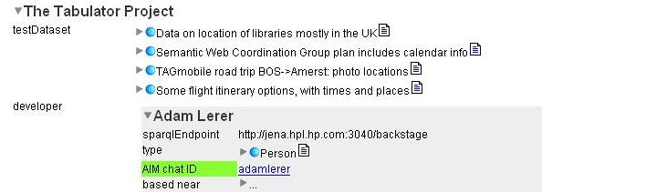
By highlighting this field, you are constructing a query that will find all tabulator developers with AIMChatIDs and display them. To select multiple
fields, use the Alt-key. Note that you are selecting the predicate (AIMChatID) and not the object (adamlerer).
icons that allow you
to expand them. This area of the tabulator is called the outliner. Click on the icon next to "The tabulator
project". When this node expands, you will see a new bunch of expandable URIs. Expand "Adam Lerer" under "developers". Now, click on the "AIM chat ID" field
in this node; it should turn green.
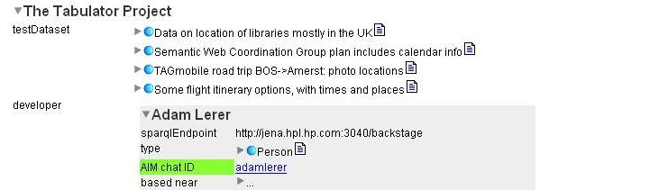
By highlighting this field, you are constructing a query that will find all tabulator developers with AIMChatIDs and display them. To select multiple
fields, use the Alt-key. Note that you are selecting the predicate (AIMChatID) and not the object (adamlerer). - Next, you want to create a table with the results of this query. Go to the tabbed views at the bottom of the page and select "View and Save Query". You will now see a list of all the developers with an AIM chat ID. 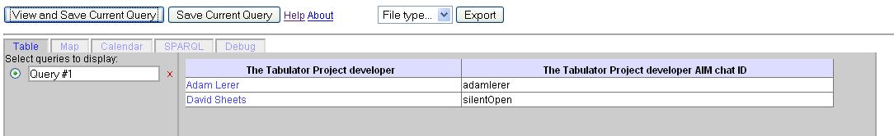
- Suppose you are actually interested in a list of all the tabulator developers, but would like to also see a column with their chat ID if they
have one. To do this, you must make the AIMChatID field optional. Go to the SPARQL tab and click on the radio button next to Query #1. You will see some
text in the textbox; this is a specification of your query in the SPARQL query language. The symbols ?v0 and ?v1 are the variables you are looking for in
in your query - ?v0 is the developer, and ?v1 is the AIMChatID. Variables must begin with the '?' character. If you look at the text within the WHERE brackets,
there are two sets of three symbols separated by periods. These triples specify the pattern you are looking for. The first triple means "Tabulator developer ?v0"
and the second says "?v0 AIMChatID ?v1".
 We want to make the second statement optional; this way, the tabulator only looks for ?v0 which are developers,
but finding the AIM is optional. To do this, wrap the second triple in curly brackets starting with "OPTIONAL" as below. Hit "Submit Query" to make a
new query with your changes. To keep track of your queries, you may want to give them names that specify what they are about. We named this new query
"Dev's with optional AIM".
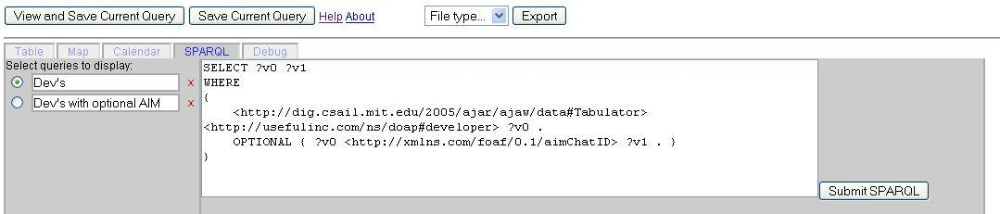
We want to make the second statement optional; this way, the tabulator only looks for ?v0 which are developers,
but finding the AIM is optional. To do this, wrap the second triple in curly brackets starting with "OPTIONAL" as below. Hit "Submit Query" to make a
new query with your changes. To keep track of your queries, you may want to give them names that specify what they are about. We named this new query
"Dev's with optional AIM".
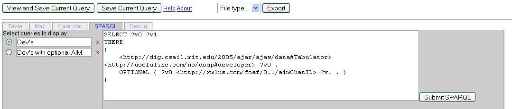
- Now, switch back to the Table tab, select your new query, and you should see a list of all the developers with their optional AIMChatID. Note that the headings are now v1 and v2. This is because Tabulator no longer knows what the fields are about, since you entered them in a SPARQL query. You can change their names, as you will soon see. 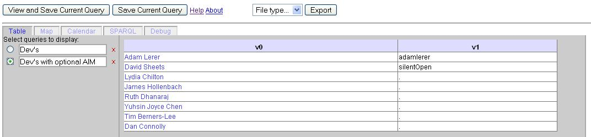
- Let's make a new query from scratch. Go back to the outliner view and find the expanded node for "Adam Lerer". Highlight the element "Mr" under title. Notice that this time we are highlighting the object and not the predicate. This tells tabulator to filter the results so that only developers with title "Mr" are displayed. 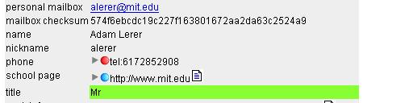
- Now go back down to the tabs, switch to the SPARQL tab, and hit "View and Save Query". You should see a new query; name it "Mr's". 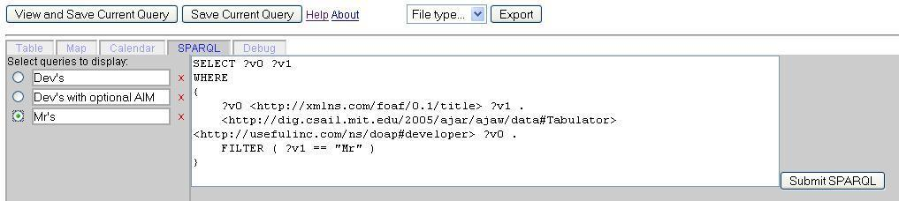 Suppose that instead of looking for all the developers with title "Mr", we want to find developers with title "Sir". In the filter, change ?v1 == "Mr" to ?v1 == "Sir". Make sure to leave the spacing around the parentheses. To make the variables easier to understand in the table, you can try changing all the instances of ?v0 to ?developer and all the instances of ?v1 to ?title. Finally, we don't really want to see a column for ?title, since we already know what the title will be. So remove ?title from the top of the SPARQL query right after SELECT (the SELECT section specifies which variables will be put in the table). Pres "Submit SPARQL" and name the new query "Sirs". 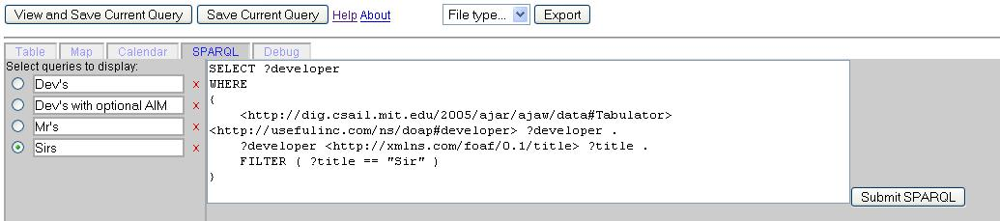
- Switch back to the Table tab, select "Sirs", and you should see a table with the one "Sir" on this team. Notice that the column head is now "developer" instead of v0. 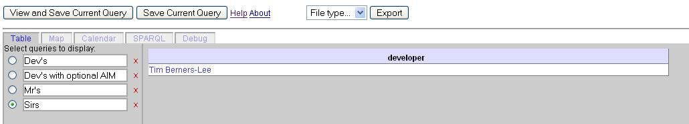
- Now, if for some reason you would like to save this one result, you can click "Export as HTML". In the popup window, go File->Save, and save this page. You will now have an HTML table which you can save and use for other purposes.
- If you would like to save the query itself, so that you can start up the tabulator some other time with the same query - which you can edit, make tables/ maps/calendars with, etc. - go back to the SPARQL view, select the query in the sidebar, and click "Get link to selected query." Now, copy the link from the textbox below. 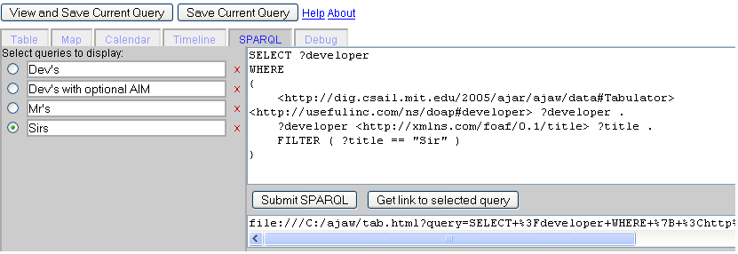 You can paste this into firefox's address bar at any time to reopen tabulator with this query already in the query sidebar.